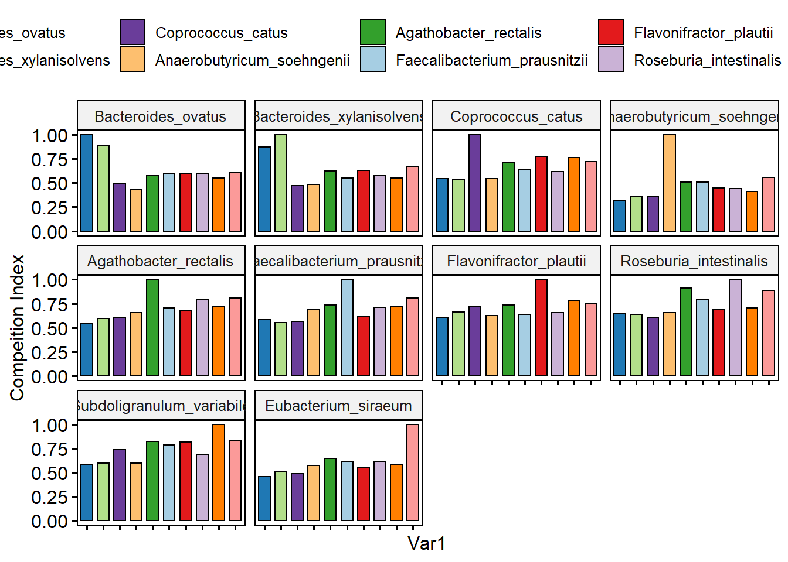
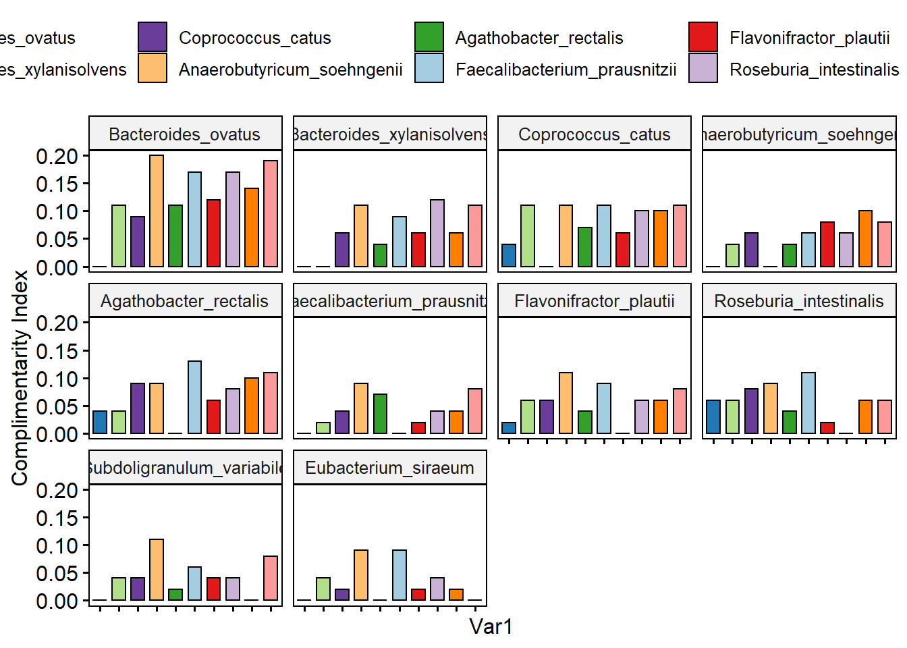
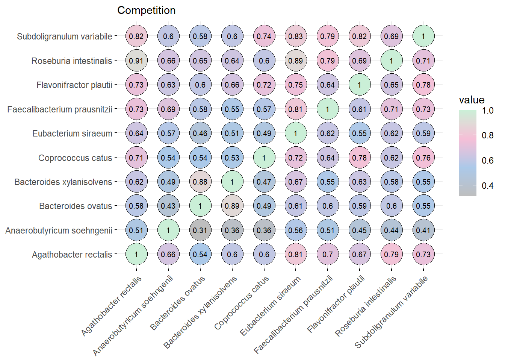
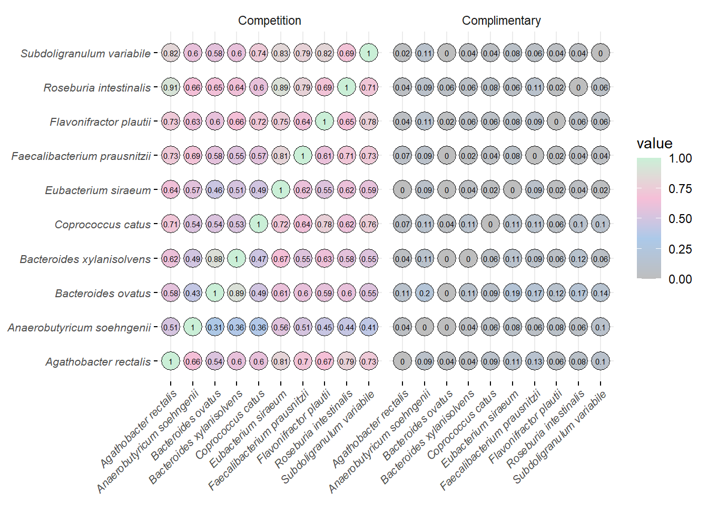

Last updated: 2021-04-05
Checks: 7 0
Knit directory: DbMM/
This reproducible R Markdown analysis was created with workflowr (version 1.6.2). The Checks tab describes the reproducibility checks that were applied when the results were created. The Past versions tab lists the development history.
Great! Since the R Markdown file has been committed to the Git repository, you know the exact version of the code that produced these results.
Great job! The global environment was empty. Objects defined in the global environment can affect the analysis in your R Markdown file in unknown ways. For reproduciblity it’s best to always run the code in an empty environment.
The command set.seed(20210404) was run prior to running the code in the R Markdown file. Setting a seed ensures that any results that rely on randomness, e.g. subsampling or permutations, are reproducible.
Great job! Recording the operating system, R version, and package versions is critical for reproducibility.
Nice! There were no cached chunks for this analysis, so you can be confident that you successfully produced the results during this run.
Great job! Using relative paths to the files within your workflowr project makes it easier to run your code on other machines.
Great! You are using Git for version control. Tracking code development and connecting the code version to the results is critical for reproducibility.
Note that you need to be careful to ensure that all relevant files for the analysis have been committed to Git prior to generating the results (you can use wflow_publish or wflow_git_commit). workflowr only checks the R Markdown file, but you know if there are other scripts or data files that it depends on. Below is the status of the Git repository when the results were generated:
Ignored files:
Ignored: .Rhistory
Ignored: .Rproj.user/
Untracked files:
Untracked: .Rprofile
Untracked: .gitattributes
Untracked: .gitignore
Untracked: DbMM.Rproj
Untracked: Ocucpancy_relationship.csv
Untracked: README.md
Untracked: _workflowr.yml
Untracked: analysis/
Untracked: bin/
Untracked: code/
Untracked: data/
Untracked: data_raw/
Untracked: ko00010.Glycolysis.png
Untracked: ko00010.png
Untracked: ko00010.xml
Untracked: ko00640.png
Untracked: ko00640.propanoate_metabolism.png
Untracked: ko00640.xml
Untracked: ko00650.butanoate_metabolism.png
Untracked: ko00650.png
Untracked: ko00650.xml
Untracked: output/
Untracked: structure.Rmd
Note that any generated files, e.g. HTML, png, CSS, etc., are not included in this status report because it is ok for generated content to have uncommitted changes.
There are no past versions. Publish this analysis with wflow_publish() to start tracking its development.
Following the approach using RevEcoR. The reverse ecology framework is used for reconstruction of metabolic networks and idenditifying the set of compounds which is used for predicting interactions between the species as described by Borenstein E, Kupiec M, Feldman M W, et al. Large-scale reconstruction and phylogenetic analysis of metabolic environments. Proceedings of the National Academy of Sciences, 2008, 105(38): 14482-14487.
Note: Requires Internet connection.
suppressPackageStartupMessages({
library(RevEcoR)
library(tidyverse)
library(reshape2)
library(qgraph)
library(ggplot2)
#library(patchwork)
library(ggpubr)
library(RColorBrewer)
#library(tidyverse)
})Read the table with all KOs and species locus tags complete_table_brite_filter.rds located in the folder data/04_metatrans/rds
complete_table.brite_filter <- readRDS("data/04_metatrans/rds/complete_table_brite_filter.rds")
#DT::datatable(complete_table.brite_filter)
complete_table.brite_filter.uniq <- complete_table.brite_filter %>% distinct(LocusTag, .keep_all = TRUE)
head(complete_table.brite_filter.uniq) KO LocusTag B1T24 B2T24 B3T24 B1T48 B2T48 B3T48
1 K00003 Agathobacter_rectalis_00645 476 612 783 324 699 856
2 K00003 Anaerobutyricum_soehngenii_01021 21 62 9 14 35 52
3 K00003 Eubacterium_siraeum_00090 852 1124 356 455 442 475
4 K00003 Coprococcus_catus_01702 88 116 57 62 38 336
5 K00003 Faecalibacterium_prausnitzii_01040 147 187 504 802 877 684
6 K00003 Anaerobutyricum_soehngenii_02720 51 86 11 37 78 200
Level_1 Level_2
1 09100 Metabolism 09105 Amino acid metabolism
2 09100 Metabolism 09105 Amino acid metabolism
3 09100 Metabolism 09105 Amino acid metabolism
4 09100 Metabolism 09105 Amino acid metabolism
5 09100 Metabolism 09105 Amino acid metabolism
6 09100 Metabolism 09105 Amino acid metabolism
Level_3 KOID
1 00270 Cysteine and methionine metabolism [PATH:ko00270] K00003
2 00270 Cysteine and methionine metabolism [PATH:ko00270] K00003
3 00270 Cysteine and methionine metabolism [PATH:ko00270] K00003
4 00270 Cysteine and methionine metabolism [PATH:ko00270] K00003
5 00270 Cysteine and methionine metabolism [PATH:ko00270] K00003
6 00270 Cysteine and methionine metabolism [PATH:ko00270] K00003
GeneName BacterialStrain
1 hom; homoserine dehydrogenase [EC:1.1.1.3] Agathobacter_rectalis
2 hom; homoserine dehydrogenase [EC:1.1.1.3] Anaerobutyricum_soehngenii
3 hom; homoserine dehydrogenase [EC:1.1.1.3] Eubacterium_siraeum
4 hom; homoserine dehydrogenase [EC:1.1.1.3] Coprococcus_catus
5 hom; homoserine dehydrogenase [EC:1.1.1.3] Faecalibacterium_prausnitzii
6 hom; homoserine dehydrogenase [EC:1.1.1.3] Anaerobutyricum_soehngeniidim(complete_table.brite_filter.uniq)[1] 14485 14colnames(complete_table.brite_filter.uniq) [1] "KO" "LocusTag" "B1T24" "B2T24"
[5] "B3T24" "B1T48" "B2T48" "B3T48"
[9] "Level_1" "Level_2" "Level_3" "KOID"
[13] "GeneName" "BacterialStrain"complete_table.brite_filter <- complete_table.brite_filter.uniq#############################################################################################
arec <- subset(complete_table.brite_filter, BacterialStrain == "Agathobacter_rectalis")
# write.csv(arec, "arec_complete_table.csv")
#arec <- arec[,-9]
arec <- arec %>% group_by(KOID, GeneName) %>%
summarize(sum(B1T24), sum(B2T24), sum(B3T24),sum(B1T48), sum(B2T48), sum(B3T48))`summarise()` regrouping output by 'KOID' (override with `.groups` argument)head(arec)# A tibble: 6 x 8
# Groups: KOID [6]
KOID GeneName `sum(B1T24)` `sum(B2T24)` `sum(B3T24)` `sum(B1T48)`
<chr> <chr> <dbl> <dbl> <dbl> <dbl>
1 K000~ " hom; ~ 476 612 783 324
2 K000~ " SORD,~ 139 156 415 211
3 K000~ " hisD;~ 390 552 570 197
4 K000~ " aroE;~ 546 630 990 540
5 K000~ " LDH, ~ 353 423 865 223
6 K000~ " hprA;~ 348 359 593 369
# ... with 2 more variables: `sum(B2T48)` <dbl>, `sum(B3T48)` <dbl>#head(df.gene_table.x)
colnames(arec) <- c("KO ID","Definition","B1T24","B2T24","B3T24","B1T48","B2T48","B3T48")
#############################################################################################
asoe <- subset(complete_table.brite_filter, BacterialStrain == "Anaerobutyricum_soehngenii")
#asoe <- asoe[,-9]
asoe <- asoe %>% group_by(KOID, GeneName) %>%
summarize(sum(B1T24), sum(B2T24), sum(B3T24),sum(B1T48), sum(B2T48), sum(B3T48))`summarise()` regrouping output by 'KOID' (override with `.groups` argument)#head(df.gene_table.x)
colnames(asoe) <- c("KO ID","Definition","B1T24","B2T24","B3T24","B1T48","B2T48","B3T48")
head(asoe)# A tibble: 6 x 8
# Groups: KO ID [6]
`KO ID` Definition B1T24 B2T24 B3T24 B1T48 B2T48 B3T48
<chr> <chr> <dbl> <dbl> <dbl> <dbl> <dbl> <dbl>
1 K00003 " hom; homoserine dehydrogenase [~ 72 148 20 51 113 252
2 K00005 " gldA; glycerol dehydrogenase [E~ 300 658 49 402 308 1083
3 K00008 " SORD, gutB; L-iditol 2-dehydrog~ 118 225 6 8 44 429
4 K00013 " hisD; histidinol dehydrogenase ~ 103 135 104 101 169 231
5 K00014 " aroE; shikimate dehydrogenase [~ 39 85 21 48 82 161
6 K00016 " LDH, ldh; L-lactate dehydrogena~ 38 74 14 28 80 156#############################################################################################
bova <- subset(complete_table.brite_filter, BacterialStrain == "Bacteroides_ovatus")
#bova <- bova[,-9]
bova <- bova %>% group_by(KOID, GeneName) %>%
summarize(sum(B1T24), sum(B2T24), sum(B3T24),sum(B1T48), sum(B2T48), sum(B3T48))`summarise()` regrouping output by 'KOID' (override with `.groups` argument)#head(df.gene_table.x)
colnames(bova) <- c("KO ID","Definition","B1T24","B2T24","B3T24","B1T48","B2T48","B3T48")
#############################################################################################
bxyl <- subset(complete_table.brite_filter, BacterialStrain == "Bacteroides_xylanisolvens")
#bxyl <- bxyl[,-9]
bxyl <- bxyl %>% group_by(KOID, GeneName) %>%
summarize(sum(B1T24), sum(B2T24), sum(B3T24),sum(B1T48), sum(B2T48), sum(B3T48))`summarise()` regrouping output by 'KOID' (override with `.groups` argument)#head(df.gene_table.x)
colnames(bxyl) <- c("KO ID","Definition","B1T24","B2T24","B3T24","B1T48","B2T48","B3T48")
#############################################################################################
ccat <- subset(complete_table.brite_filter, BacterialStrain == "Coprococcus_catus")
#ccat <- ccat[,-9]
ccat <- ccat %>% group_by(KOID, GeneName) %>%
summarize(sum(B1T24), sum(B2T24), sum(B3T24),sum(B1T48), sum(B2T48), sum(B3T48))`summarise()` regrouping output by 'KOID' (override with `.groups` argument)#head(df.gene_table.x)
colnames(ccat) <- c("KO ID","Definition","B1T24","B2T24","B3T24","B1T48","B2T48","B3T48")
#############################################################################################
esir <- subset(complete_table.brite_filter, BacterialStrain == "Eubacterium_siraeum")
#esir <- esir[,-9]
esir <- esir %>% group_by(KOID, GeneName) %>%
summarize(sum(B1T24), sum(B2T24), sum(B3T24),sum(B1T48), sum(B2T48), sum(B3T48))`summarise()` regrouping output by 'KOID' (override with `.groups` argument)#head(df.gene_table.x)
colnames(esir) <- c("KO ID","Definition","B1T24","B2T24","B3T24","B1T48","B2T48","B3T48")
#############################################################################################
fpra <- subset(complete_table.brite_filter, BacterialStrain == "Faecalibacterium_prausnitzii")
#fpra <- fpra[,-9]
fpra <- fpra %>% group_by(KOID, GeneName) %>%
summarize(sum(B1T24), sum(B2T24), sum(B3T24),sum(B1T48), sum(B2T48), sum(B3T48))`summarise()` regrouping output by 'KOID' (override with `.groups` argument)#head(df.gene_table.x)
colnames(fpra) <- c("KO ID","Definition","B1T24","B2T24","B3T24","B1T48","B2T48","B3T48")
#############################################################################################
lach <- subset(complete_table.brite_filter, BacterialStrain == "Lachnospiraceae_bacterium")
#lach <- lach[,-9]
lach <- lach %>% group_by(KOID, GeneName) %>%
summarize(sum(B1T24), sum(B2T24), sum(B3T24),sum(B1T48), sum(B2T48), sum(B3T48))`summarise()` regrouping output by 'KOID' (override with `.groups` argument)#head(df.gene_table.x)
colnames(lach) <- c("KO ID","Definition","B1T24","B2T24","B3T24","B1T48","B2T48","B3T48")
#############################################################################################
rint <- subset(complete_table.brite_filter, BacterialStrain == "Roseburia_intestinalis")
#rint <- rint[,-9]
rint <- rint %>% group_by(KOID, GeneName) %>%
summarize(sum(B1T24), sum(B2T24), sum(B3T24),sum(B1T48), sum(B2T48), sum(B3T48))`summarise()` regrouping output by 'KOID' (override with `.groups` argument)#head(df.gene_table.x)
colnames(rint) <- c("KO ID","Definition","B1T24","B2T24","B3T24","B1T48","B2T48","B3T48")
#############################################################################################
svar <- subset(complete_table.brite_filter, BacterialStrain == "Subdoligranulum_variabile")
#svar <- svar[,-9]
svar <- svar %>% group_by(KOID, GeneName) %>%
summarize(sum(B1T24), sum(B2T24), sum(B3T24),sum(B1T48), sum(B2T48), sum(B3T48))`summarise()` regrouping output by 'KOID' (override with `.groups` argument)#head(df.gene_table.x)
colnames(svar) <- c("KO ID","Definition","B1T24","B2T24","B3T24","B1T48","B2T48","B3T48")
head(svar)# A tibble: 6 x 8
# Groups: KO ID [6]
`KO ID` Definition B1T24 B2T24 B3T24 B1T48 B2T48 B3T48
<chr> <chr> <dbl> <dbl> <dbl> <dbl> <dbl> <dbl>
1 K00003 " hom; homoserine dehydrogenase [~ 21 22 60 223 173 188
2 K00012 " UGDH, ugd; UDPglucose 6-dehydro~ 28 36 68 87 103 301
3 K00013 " hisD; histidinol dehydrogenase ~ 35 60 165 105 174 291
4 K00014 " aroE; shikimate dehydrogenase [~ 59 48 129 115 163 387
5 K00027 " ME2, sfcA, maeA; malate dehydro~ 40 47 111 163 191 304
6 K00031 " IDH1, IDH2, icd; isocitrate deh~ 54 71 200 342 320 590head(bova)# A tibble: 6 x 8
# Groups: KO ID [6]
`KO ID` Definition B1T24 B2T24 B3T24 B1T48 B2T48 B3T48
<chr> <chr> <dbl> <dbl> <dbl> <dbl> <dbl> <dbl>
1 K00008 " SORD, gutB; L-iditol 2-dehydrog~ 35 38 66 120 184 254
2 K00012 " UGDH, ugd; UDPglucose 6-dehydro~ 219 220 629 484 692 1016
3 K00013 " hisD; histidinol dehydrogenase ~ 56 82 248 173 204 331
4 K00014 " aroE; shikimate dehydrogenase [~ 34 53 132 83 81 132
5 K00018 " hprA; glycerate dehydrogenase [~ 50 46 148 72 79 122
6 K00024 " mdh; malate dehydrogenase [EC:1~ 2002 3407 10219 1180 870 1028bova.s <- as.data.frame(bova)
rownames(bova.s) <- bova.s$`KO ID`
#bxyl
bxyl.s <- as.data.frame(bxyl)
rownames(bxyl.s) <- bxyl.s$`KO ID`
arec.s <- as.data.frame(arec)
rownames(arec.s) <- arec.s$`KO ID`
asoe.s <- as.data.frame(asoe)
rownames(asoe.s) <- asoe.s$`KO ID`
ccat.s <- as.data.frame(ccat)
rownames(ccat.s) <- ccat.s$`KO ID`
esir.s <- as.data.frame(esir)
rownames(esir.s) <- esir.s$`KO ID`
fpra.s <- as.data.frame(fpra)
rownames(fpra.s) <- fpra.s$`KO ID`
lach.s <- as.data.frame(lach)
rownames(lach.s) <- lach.s$`KO ID`
rint.s <- as.data.frame(rint)
rownames(rint.s) <- rint.s$`KO ID`
svar.s <- as.data.frame(svar)
rownames(svar.s) <- svar.s$`KO ID`When running the codes for first time change the eval=FALSE to TRUE
Bacteroides_ovatu_3_8_47FAA.net <- reconstructGsMN(bova.s, RefData = RefDbcache)
Bacteroides_sp_2_1_22.net <- reconstructGsMN(bxyl.s, RefData = RefDbcache)
#Bacteroides_sp_3_1_23.net <- reconstructGsMN(Bacteroides_sp_3_1_23, RefData = RefDbcache)
Coprococcus_catus.net <- reconstructGsMN(ccat.s, RefData = RefDbcache)
Eubacterium_hallii_L2_7.net <- reconstructGsMN(asoe.s, RefData = RefDbcache)
Eubacterium_rectale_DSM_17629.net <- reconstructGsMN(arec.s, RefData = RefDbcache)
Faecalibacterium_prausnitzii_A2_165.net <- reconstructGsMN(fpra.s,
RefData = RefDbcache)
Lachnospiraceae_bacterium_7_1_58FAA.net <- reconstructGsMN(lach.s,
RefData = RefDbcache)
Roseburia_intestinalis_L1_82.net <- reconstructGsMN(rint.s,
RefData = RefDbcache)
#Ruminococcus_bromii_l2.net <- reconstructGsMN(Ruminococcus_bromii_l2,
# RefData = RefDbcache)
Subdoligranulum_variabile_DSM_15176.net <- reconstructGsMN(svar.s,
RefData = RefDbcache)
Eubacterium_siraeum_DSM_15702.net <- reconstructGsMN(esir.s,
RefData = RefDbcache)When running the codes for first time change the eval=FALSE to TRUE
cooperation.index<-calculateCooperationIndex(Bacteroides_ovatu_3_8_47FAA.net,
Bacteroides_sp_2_1_22.net,
Coprococcus_catus.net,
Eubacterium_hallii_L2_7.net,
Eubacterium_rectale_DSM_17629.net,
Faecalibacterium_prausnitzii_A2_165.net,
Lachnospiraceae_bacterium_7_1_58FAA.net,
Roseburia_intestinalis_L1_82.net,
Subdoligranulum_variabile_DSM_15176.net,
Eubacterium_siraeum_DSM_15702.net)
saveRDS(cooperation.index, "data/04_metatrans/rds/RevEco_cooperation.index.rds")Read in the stored cooperative indices
cooperation.index <- readRDS("data/04_metatrans/rds/RevEco_cooperation.index.rds")
complementarity.index_2018 <- cooperation.index$complementarity.index
competition.index_2018 <- cooperation.index$competition.index
write.csv(complementarity.index_2018, "data/04_metatrans/tables/DbMM10_complementarity_index.csv")
write.csv(competition.index_2018, "data/04_metatrans/tables/DbMM10_competition_index.csv") add names to competition matrix
rownames(competition.index_2018) <- c("Bacteroides_ovatus",
"Bacteroides_xylanisolvens",
"Coprococcus_catus",
"Anaerobutyricum_soehngenii",
"Agathobacter_rectalis",
"Faecalibacterium_prausnitzii",
"Flavonifractor_plautii",
"Roseburia_intestinalis",
"Subdoligranulum_variabile",
"Eubacterium_siraeum")
colnames(competition.index_2018) <- c("Bacteroides_ovatus",
"Bacteroides_xylanisolvens",
"Coprococcus_catus",
"Anaerobutyricum_soehngenii",
"Agathobacter_rectalis",
"Faecalibacterium_prausnitzii",
"Flavonifractor_plautii",
"Roseburia_intestinalis",
"Subdoligranulum_variabile",
"Eubacterium_siraeum")add names to complementatrity matrix
rownames(complementarity.index_2018) <- c("Bacteroides_ovatus",
"Bacteroides_xylanisolvens",
"Coprococcus_catus",
"Anaerobutyricum_soehngenii",
"Agathobacter_rectalis",
"Faecalibacterium_prausnitzii",
"Flavonifractor_plautii",
"Roseburia_intestinalis",
"Subdoligranulum_variabile",
"Eubacterium_siraeum")
colnames(complementarity.index_2018) <- c("Bacteroides_ovatus",
"Bacteroides_xylanisolvens",
"Coprococcus_catus",
"Anaerobutyricum_soehngenii",
"Agathobacter_rectalis",
"Faecalibacterium_prausnitzii",
"Flavonifractor_plautii",
"Roseburia_intestinalis",
"Subdoligranulum_variabile",
"Eubacterium_siraeum")# set colors
strain.colors <- c(Bacteroides_ovatus = "#1F78B4",
Bacteroides_xylanisolvens = "#B2DF8A",
Anaerobutyricum_soehngenii = "#FDBF6F",
Agathobacter_rectalis= "#33A02C",
Eubacterium_siraeum ="#FB9A99",
Faecalibacterium_prausnitzii = "#A6CEE3",
Flavonifractor_plautii = "#E31A1C",
Roseburia_intestinalis= "#CAB2D6",
Subdoligranulum_variabile = "#FF7F00",
Coprococcus_catus = "#6A3D9A")Network
rows_to_keep <- c("Bacteroides_ovatus",
"Bacteroides_xylanisolvens",
"Coprococcus_catus",
"Anaerobutyricum_soehngenii",
"Agathobacter_rectalis",
"Faecalibacterium_prausnitzii",
"Flavonifractor_plautii",
"Roseburia_intestinalis",
"Subdoligranulum_variabile",
"Eubacterium_siraeum")
competition.index_2018.a <- competition.index_2018[rows_to_keep, ]
dim(competition.index_2018.a)[1] 10 10competition.index_2018.a <- competition.index_2018.a[, rows_to_keep]
# paper ready labels
labels_to_keep <- c("Bacteroides_ovatus",
"Bacteroides_xylanisolvens",
"Coprococcus_catus",
"Anaerobutyricum_soehngenii",
"Agathobacter_rectalis",
"Faecalibacterium_prausnitzii",
"Flavonifractor_plautii",
"Roseburia_intestinalis",
"Subdoligranulum_variabile",
"Eubacterium_siraeum")
rownames(competition.index_2018.a) <- labels_to_keep
colnames(competition.index_2018.a) <- labels_to_keep
Labels = rownames(competition.index_2018.a)alternative plots
qgraph(competition.index_2018.a, #theme= "TeamFortress",
edge.color = "#ec7014",
labels = Labels,
label.cex =3.0,
layout = "circle",
label.scale = FALSE,
edge.labels = T,
minimum = 0.3,
title = "Competition (Gene Expression)",
filetype= 'pdf',
filename = "data/04_metatrans/figs/netowork_competition",
height = 12, width = 28
)mcompetition <- melt(as.matrix(competition.index_2018.a))
#head(mcompetition)
compet.plot <- ggbarplot(mcompetition, "Var1", "value", fill = "Var1",
facet.by = "Var2", palette = strain.colors,
ylab = "Compeition Index") + rremove("x.text")
compet.plot
ggsave("data/04_metatrans/figs/competition_barplot.pdf", height = 4, width = 10)
mcompetition$value <- round(mcompetition$value, digits = 2)
my_cols <- c("grey", "#abc9e9", "#f5bfd7","#caefd7")complementarity.index_2018.a <- complementarity.index_2018[rows_to_keep, ]
dim(complementarity.index_2018.a)[1] 10 10complementarity.index_2018.a <- complementarity.index_2018.a[, rows_to_keep]
dim(complementarity.index_2018.a)[1] 10 10rownames(complementarity.index_2018.a) <- labels_to_keep
colnames(complementarity.index_2018.a) <- labels_to_keep
Labels2 = rownames(complementarity.index_2018.a)
mcompimentarity <- melt(as.matrix(complementarity.index_2018.a))
mcompimentarity$value <- round(mcompimentarity$value, digits = 2)
compliment.plot <- ggbarplot(mcompimentarity, "Var1", "value", fill = "Var1",
facet.by = "Var2", palette = strain.colors,
ylab = "Complimentarity Index") + rremove("x.text")
compliment.plot
mcompetition$Var1 <- gsub("_", " ", mcompetition$Var1)
mcompetition$Var2 <- gsub("_", " ", mcompetition$Var2)
compet.plot <- ggballoonplot(mcompetition, x = "Var1", y = "Var2", fill = "value",
#facet.by = "Var2",
#palette = "Blues",
ylab = "Compeition Index",
show.label = TRUE,
font.label = 8,
size = 10) +
labs(subtitle = "Competition") +
gradient_fill(my_cols)
compet.plot
mcompimentarity$Var1 <- gsub("_", " ", mcompimentarity$Var1)
mcompimentarity$Var2 <- gsub("_", " ", mcompimentarity$Var2)Join both the plots for competition and complimentary
Used in Manuscript
mcompetition$Index = "Competition"
mcompimentarity$Index = "Complimentary"
all_indx <- mcompimentarity %>%
bind_rows(mcompetition)
ggballoonplot(all_indx, x = "Var1", y = "Var2", fill = "value",
#facet.by = "Var2",
#palette = "Blues",
ylab = "Compeition Index",
show.label = TRUE,
font.label = 6,
size = 6,
facet.by = "Index") +
gradient_fill(my_cols) +
theme(axis.text = element_text(face="italic", size = 8))
ggsave("data/04_metatrans/figs/competition_complementarity.pdf", height =4, width = 8)sessionInfo()
sessionInfo()R version 4.0.3 (2020-10-10)
Platform: x86_64-w64-mingw32/x64 (64-bit)
Running under: Windows 10 x64 (build 19042)
Matrix products: default
locale:
[1] LC_COLLATE=English_Netherlands.1252 LC_CTYPE=English_Netherlands.1252
[3] LC_MONETARY=English_Netherlands.1252 LC_NUMERIC=C
[5] LC_TIME=English_Netherlands.1252
attached base packages:
[1] stats graphics grDevices utils datasets methods base
other attached packages:
[1] RColorBrewer_1.1-2 ggpubr_0.4.0 qgraph_1.6.5 reshape2_1.4.4
[5] forcats_0.5.0 stringr_1.4.0 dplyr_1.0.2 purrr_0.3.4
[9] readr_1.4.0 tidyr_1.1.2 tibble_3.0.4 ggplot2_3.3.2
[13] tidyverse_1.3.0 RevEcoR_0.99.3 workflowr_1.6.2
loaded via a namespace (and not attached):
[1] colorspace_1.4-1 ggsignif_0.6.0 rjson_0.2.20
[4] rio_0.5.16 ellipsis_0.3.1 rprojroot_1.3-2
[7] htmlTable_2.1.0 corpcor_1.6.9 base64enc_0.1-3
[10] fs_1.5.0 rstudioapi_0.11 farver_2.0.3
[13] lavaan_0.6-7 fansi_0.4.1 lubridate_1.7.9
[16] xml2_1.3.2 splines_4.0.3 mnormt_2.0.2
[19] knitr_1.30 glasso_1.11 Formula_1.2-4
[22] jsonlite_1.7.1 broom_0.7.1 cluster_2.1.0
[25] dbplyr_1.4.4 png_0.1-7 compiler_4.0.3
[28] httr_1.4.2 backports_1.2.0 assertthat_0.2.1
[31] Matrix_1.2-18 cli_2.1.0 later_1.1.0.1
[34] htmltools_0.5.1.1 tools_4.0.3 igraph_1.2.6
[37] gtable_0.3.0 glue_1.4.2 Rcpp_1.0.5
[40] carData_3.0-4 cellranger_1.1.0 vctrs_0.3.4
[43] nlme_3.1-149 psych_2.0.9 xfun_0.17
[46] ps_1.4.0 openxlsx_4.2.2 rvest_0.3.6
[49] lifecycle_0.2.0 gtools_3.8.2 rstatix_0.6.0
[52] XML_3.99-0.5 MASS_7.3-53 scales_1.1.1
[55] BDgraph_2.63 hms_0.5.3 promises_1.1.1
[58] parallel_4.0.3 huge_1.3.4.1 curl_4.3
[61] yaml_2.2.1 pbapply_1.4-3 gridExtra_2.3
[64] rpart_4.1-15 latticeExtra_0.6-29 stringi_1.5.3
[67] checkmate_2.0.0 zip_2.1.1 rlang_0.4.8
[70] pkgconfig_2.0.3 d3Network_0.5.2.1 evaluate_0.14
[73] lattice_0.20-41 labeling_0.4.2 htmlwidgets_1.5.2
[76] tidyselect_1.1.0 plyr_1.8.6 magrittr_1.5
[79] R6_2.5.0 generics_0.1.0 Hmisc_4.4-1
[82] DBI_1.1.0 whisker_0.4 pillar_1.4.6
[85] haven_2.3.1 foreign_0.8-80 withr_2.3.0
[88] abind_1.4-5 survival_3.2-7 nnet_7.3-14
[91] car_3.0-10 modelr_0.1.8 crayon_1.3.4
[94] utf8_1.1.4 fdrtool_1.2.15 tmvnsim_1.0-2
[97] rmarkdown_2.4 jpeg_0.1-8.1 grid_4.0.3
[100] readxl_1.3.1 data.table_1.13.0 pbivnorm_0.6.0
[103] blob_1.2.1 git2r_0.27.1 reprex_0.3.0
[106] digest_0.6.27 httpuv_1.5.4 stats4_4.0.3
[109] munsell_0.5.0